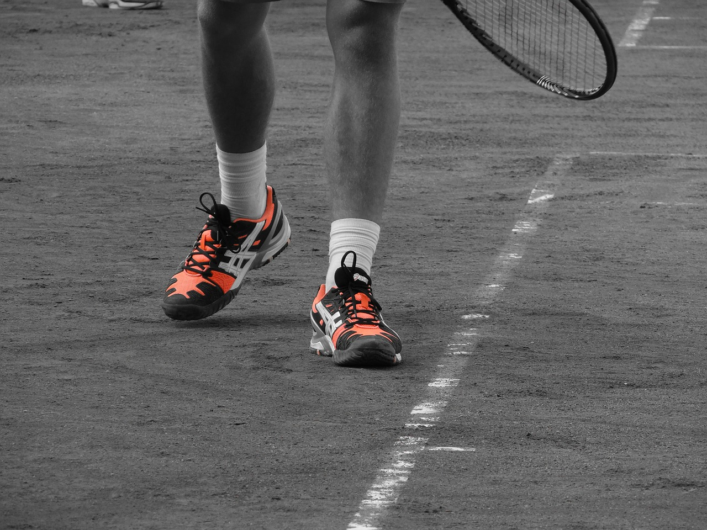

Een koolstofvezel voetbal is een goede technologie, want het maakt de voetbal lichter en dan is het
minder zwaar voor de voetballers die het gebruiken. Het is ook beter voor het milieu, want de
materialen worden op een milieu bewuste manier gemaakt voor het gebruik van deze bal. Je kan ook
makkelijk de kleur veranderen met de speciale technologie verf dat nieuw is voor deze sport en alle
andere sporten bij elkaar. Het wordt pas 3 maanden gebruikt door de meeste clubs.
© Willem
Wever
Extra gladde tennisschoenen
De extra gladde schoenen zijn gemaakt zodat de tennissers makkelijker kunnen glijden over de grond
als ze bij de bal moeten en ze zijn niet ver genoeg. Deze schoenen zijn extra glad door de speciale
onderkant dat is gemaakt van 23 verschillende soorten kunststof die allemaal anders zijn. Dit zorgt
ervoor dat er veel minder wrijving is tussen de schoen en de vloer dus dan glijdt het beter. De
meeste tennissers gebruiken dit om net bij de bal te kunnen.

©
onlinetennisser
De flexibele basketbal ring is gemaakt om de ring beter te laten bewegen als er een bal tegenaan
komt. Dit is goed, want dan is het minder voorspelbaar om te weten waar de bal heen gaat en dan is
het eerlijker voor beide teams. Het is gemaakt met rubber dat op een milieu bewuste manier is
verkregen uit de natuur. De ring kan binnen of buiten worden gebruikt, want het kan tegen water.
©
sportbay